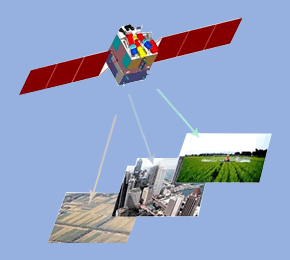

储、并行云处理和共享云应用服务，使测绘应用系统更强
大、更高效、更便捷、更经济、更广泛！
云工作台 - 单机
-
OpenRS云工作台
开放遥感平台OpenRS界面友好灵活，功能专业多样，不仅支持基本的光学、SAR遥感影像处理，还支持专业的遥感应用，提供了包括大气、陆地、海洋等23种定量专题产品生产功能。
-

ArcGIS云工作台
ArcGIS为用户提供一个可伸缩的，全面的GIS平台。ArcGIS整合了数据库、软件工程、人工智能、网络技术、云计算等主流的IT技术，为用户提供一套完整的、开放的企业级GIS解决方案。
-
ENVI云工作台
ENVI是由遥感领域的科学家采用IDL开发的一套功能强大的、完整的遥感图像处理软件。ENVI架构非常灵活，提供一个功能全面的函数库，可以满足用户的个性化需求。
-
ERDAS云工作台
ERDAS是一款遥感图像处理系统软件，服务于不同层次用户的模型开发工具以及高度的遥感图像处理和地理信息系统集成功能，为用户提供了内容丰富而功能强大的图像处理工具。
-
Office云工作台
Microsoft Office是微软公司开发的一套基于 Windows 操作系统的办公软件套装。常用组件有 Word、Excel、Powerpoint等，它与办公室应用程序一样，它包括联合的服务器和基于互联网的服务。
云工作台 - 集群
-

实时镶嵌能力
高性能集群云工作台支持对若干幅图像的几何镶嵌、色调调整、去重叠等实时处理，镶嵌到一幅大的背景影像中，实现大规模影像在快速拼接、镶嵌成图等环节的高效处理。
-
DEM全自动生成
相比较人工生成DEM的操作繁琐、耗时长、效率低，DEM的全自动化生成极大地提高了生产效率，适合大规模DEM快速、批量处理并利用其高性能集群计算环境进行快速的输出。
-

遥感影像并行纠正
支持并行处理，解决大数据量的快速计算。并行处理相对于单机运行，采用分布式的方式处理，通过批量提交任务，进行多任务的同时处理，可以缩减大量时间，提高遥感影像的纠正效率。
-
DEM彩色晕渲
晕渲图是DEM地表形态表达的一种形式，它通过设置光源的高度角和方位角更形象或者更符合人类视觉的方式展示一个地区的地形。通过晕渲图，可以很好的反应地形地势的变化，有很好的立体感，方便用图者的使用。
行业服务<>